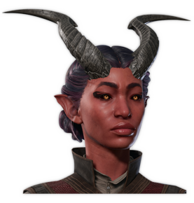
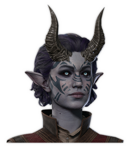
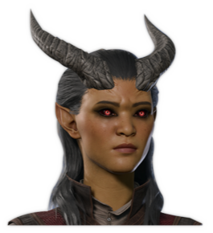

Ser recebido com olhares e cochichos, sofrer violência e insultos nas ruas, ver a desconfiança e medo em cada olhar: esse é o fardo do tiefling. E para completar tudo, os tieflings sabem que isso é graças ao pacto feito gerações atrás que infundiu a essência de Asmodeus – senhor supremo dos Nove Infernos – em sua linhagem. Sua aparência e natureza não é culpa deles, mas é o resultado de um pecado ancestral, pelo qual eles, seus filhos e os filhos de seus filhos serão eternamente responsabilizados.
Os tieflings derivam de linhagens humanas e, no sentido mais amplo possível, eles ainda parecem humanos. No entanto, sua herança infernal deixou traços claros na sua aparência. Tieflings possuem grandes chifres que possuem os mais diversos formatos: alguns possuem chifres curvos, como um carneiro, outros possuem chifres compridos e finos, como uma gazela, e outros chifres espiralados e alongados, como os de um antílope. Eles possuem uma final calda, com uns 1,20 metro a 1,50 metro de comprimento, que chicoteia ou se enrola em suas pernas quando ele fica chateado ou nervoso. Seus dentes caninos são afiados e pontiagudos e seus olhos possuem cores solidas – preto, vermelho, branco, prateado ou dourado – sem esclera ou pupila visíveis. Seus tons de pele abrangem todas as tonalidades da pele humana, mas também incluem variações de tons vermelho. Seus cabelos, escorrem atrás dos seus chifres, geralmente escuro, de preto ou marrom a vermelho, azul ou roxo escuro.
Os tieflings sobrevivem em pequenas minorias encontradas geralmente em cidades ou vilas humanas, na maioria das vezes em bairros mais barra-pesada desses lugares, onde eles crescem para se tornarem vigaristas, ladrões ou senhores do crime. Às vezes, eles vivem entre outras minorias populacionais em enclaves onde eles são tratados com mais respeito.
Sem uma terra natal, os tieflings sabem que eles precisam traçar seus próprios caminhos no mundo e que eles precisam ser fortes para sobreviver. Eles não confiam em qualquer um que seja amistoso com facilidade, mas quando o companheiro de um tiefling demonstra que confia nele, o tiefling aprende a retribuir essa confiança. E, quando um tiefling concede sua lealdade a alguém, o tiefling se torna um amigo ou aliado confiável para toda a vida.
Os nomes dos tieflings fazem parte de três vastas categorias. Os tieflings que nascem em outra cultura normalmente terão nomes que refletem essa cultura. Alguns possuirão nomes derivados do idioma Infernal, passado através das gerações, que refletirá sua herança demoníaca. E alguns tieflings mais jovens, esforçando-se para encontrar um lugar no mundo, adotarão um nome que demonstre honra ou outro conceito e, então, tentarão encarnar esse conceito. Para alguns, o nome escolhido é uma nobre missão. Para outros, é um destino cruel.
Nomes infernais masculinos: Akmenos, Amnon, Barakas, Damakos, Ekemon, Iados, Kairon, Leucis, Melech, Mordai, Morthos, Pelaios, Skamos, TheraiSeu valor de Inteligência aumenta em 1 e seu valor de Carisma aumenta em 2.
Os tieflings amadurecem ao mesmo tempo que os humanos, mas vivem alguns anos a mais.
Tieflings não possuem uma tendência inata ao mal, mas muitos acabam por abraçá-lo. Maligno ou não, uma natureza independente inclina a maioria dos tieflings ao alinhamento caótico.
Os tieflings possuem o mesmo tamanho e compleição dos humanos. Seu tamanho é Médio.
Seu deslocamento base de caminhada é 9 metros.
Você conhece o truque taumaturgia. Quando você atingir o 3° nível, você poderá conjurar a magia repreensão infernal como uma magia de 2° nível. Quando você atingir o 5° nível, você também poderá conjurar a magia escuridão. Você precisa terminar um descanso longo para poder usar as magias desse traço novamente. Sua habilidade de conjuração para essas magias é Carisma.
Graças a sua herança infernal, você tem uma visão superior no escuro e na penumbra. Você enxerga na penumbra a até 18 metros como se fosse luz plena, e no escuro como se fosse na penumbra. Você não pode discernir cores no escuro, apenas tons de cinza.
Você tem resistência a dano de fogo
A raça dos tieflings possuem diferentes linhagens com base no demônio que os antepassados realizaram o pacto.
Vindos de Nessus, a camada mais profunda dos infernos, esses tieflings herdaram a habilidade de portar o fogo e a escuridão do arquidemônio Asmodeus.
No nível 1 Você ganha a capacidade de conjurar Produzir ChamasDescendentes do arquidemônio Mephistopheles, esses tieflings são abençoados com uma peculiar afinidade com magia arcana.
No nível 1 Você ganha a capacidade de conjurar Mão MágicaTieflings da linhagen sanguínea de Zariel são muito habilidosos em artes marciais, e podem canalizar chamas para punir seus inimigos.
No nível 1 Você ganha a capacidade de conjurar Taumaturgia|  Linhagem de Asmodeus |
 Linhagem de Mephistopheles |
 Linhagem de Zariel |
|---|
Por questões de balanceamento os tieflings não ganham nenhuma proficiência pela raça